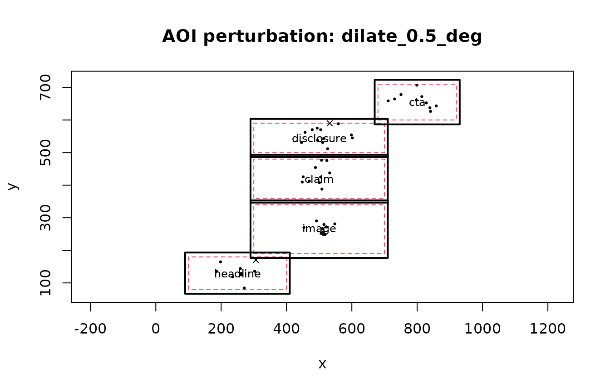

AOI Perturbation and Uncertainty Analysis
Source:vignettes/aoi-perturbation-uncertainty.Rmd
aoi-perturbation-uncertainty.RmdAOI Geometry Is an Analytical Assumption
AOI geometry is an analytical assumption. Small changes to a boundary can change whether a sample or fixation is counted as headline, image, claim, disclosure, CTA, outside, or ambiguous. The purpose of this workflow is not to find a preferred boundary. It asks whether a conclusion is stable under a declared set of defensible alternatives.
Use this analysis when observations cluster near boundaries, neighboring AOIs are close, or AOI size is comparable with expected spatial error. Do not use it as a substitute for calibration, coordinate-quality auditing, or preregistered stimulus design.
Synthetic advertising layout
The example is fully synthetic and intentionally small.
aois <- data.frame(
aoi_id = c("headline", "image", "claim", "disclosure", "cta"),
xmin = c(100, 300, 300, 300, 680),
xmax = c(400, 700, 700, 700, 920),
ymin = c(80, 190, 360, 500, 600),
ymax = c(180, 340, 480, 590, 710)
)
set.seed(12)
centers <- data.frame(
x = c(250, 500, 500, 500, 800),
y = c(130, 270, 430, 560, 650),
aoi = c("headline", "image", "claim", "disclosure", "cta")
)
rows <- list()
k <- 0L
for (participant in 1:8) {
condition <- participant %% 2
for (trial in 1:3) {
for (j in seq_len(nrow(centers))) {
n <- 5L + if (centers$aoi[j] == "disclosure" && condition == 1) 3L else 0L
for (fix in seq_len(n)) {
k <- k + 1L
rows[[k]] <- data.frame(
obs = k,
participant = paste0("p", participant),
trial = trial,
condition = condition,
x = rnorm(1, centers$x[j], 35),
y = rnorm(1, centers$y[j], 22),
duration = runif(1, .06, .18),
time = j - 1 + (fix - 1) / 20
)
}
}
}
}
fixations <- do.call(rbind, rows)AOI Perturbation Sensitivity Analysis
Pixels versus Degrees of Visual Angle
Degree-based perturbations require explicit display geometry and viewing distance. The workflow never silently converts units.
grid <- create_aoi_perturbation_grid(
dilations = c(.25, .50, 1.00),
erosions = .25,
translations_x = .50,
translations_y = .50,
unit = "deg",
include_baseline = TRUE,
screen_width_px = 1024,
screen_height_px = 768,
viewing_distance = 60,
physical_screen_size = c(53.1, 29.9),
boundary_policy = "allow"
)
grid$table
#> perturbation_id operation margin_x margin_y translation_x translation_y unit
#> 1 baseline baseline 0.00 0.00 0.0 0.0 deg
#> 2 dilate_0.25_deg dilation 0.25 0.25 0.0 0.0 deg
#> 3 dilate_0.5_deg dilation 0.50 0.50 0.0 0.0 deg
#> 4 dilate_1_deg dilation 1.00 1.00 0.0 0.0 deg
#> 5 erode_0.25_deg erosion 0.25 0.25 0.0 0.0 deg
#> 6 shift_x_0.5_deg translate 0.00 0.00 0.5 0.0 deg
#> 7 shift_y_0.5_deg translate 0.00 0.00 0.0 0.5 deg
#> seed boundary_policy
#> 1 NA allow
#> 2 NA allow
#> 3 NA allow
#> 4 NA allow
#> 5 NA allow
#> 6 NA allow
#> 7 NA allowThe seven branches are the nominal geometry, three dilations, one erosion, one horizontal translation, and one vertical translation.
Propagating AOI Uncertainty Into Statistical Models
The perturbation framework does not choose an estimator. The model
callback must explicitly report its estimator output, convergence flag,
and model N; converged rows require finite estimates,
standard errors, confidence limits, and a positive integer-valued
N. Here the example uses the same base-R linear model for
disclosure dwell in every branch.
model_callback <- function(features, assigned, spec) {
target <- features[features$aoi == "disclosure", , drop = FALSE]
condition_map <- unique(assigned[, c("participant", "condition")])
target <- merge(target, condition_map, by = "participant", all.x = TRUE)
fit <- stats::lm(dwell ~ condition, data = target)
co <- summary(fit)$coefficients
if (!"condition" %in% rownames(co)) stop("condition coefficient unavailable")
estimate <- unname(co["condition", "Estimate"])
se <- unname(co["condition", "Std. Error"])
data.frame(
term = "condition",
estimate = estimate,
SE = se,
CI_low = estimate - 1.96 * se,
CI_high = estimate + 1.96 * se,
p_value = unname(co["condition", "Pr(>|t|)"]),
model_converged = TRUE,
N = stats::nobs(fit)
)
}Run geometry to inference
result <- run_aoi_sensitivity_analysis(
fixations,
aois,
grid,
x_col = "x",
y_col = "y",
observation_id_col = "obs",
participant_col = "participant",
trial_col = "trial",
duration_col = "duration",
time_col = "time",
observation_level = "fixation",
overlap_policy = "ambiguous",
model_callback = model_callback,
preprocessing_specification = list(duration_unit = "seconds"),
event_detector = "synthetic_fixations",
quality_rules = list(missing = "preserve", overlap = "ambiguous"),
model_specification = list(
family = "lm",
outcome = "disclosure_dwell",
predictor = "condition"
)
)
summary <- summarise_aoi_sensitivity(result)
summary$assignment_stability
#> perturbation_id n_total n_comparable proportion_unchanged
#> baseline baseline 636 636 1.0000000
#> dilate_0.25_deg dilate_0.25_deg 636 636 0.9827044
#> dilate_0.5_deg dilate_0.5_deg 636 636 0.9748428
#> dilate_1_deg dilate_1_deg 636 636 0.9591195
#> erode_0.25_deg erode_0.25_deg 636 636 0.9811321
#> shift_x_0.5_deg shift_x_0.5_deg 636 636 1.0000000
#> shift_y_0.5_deg shift_y_0.5_deg 636 636 0.9559748
#> proportion_newly_assigned proportion_lost proportion_reassigned
#> baseline 0.00000000 0.00000000 0.000000000
#> dilate_0.25_deg 0.01729560 0.00000000 0.000000000
#> dilate_0.5_deg 0.02515723 0.00000000 0.000000000
#> dilate_1_deg 0.03144654 0.00000000 0.009433962
#> erode_0.25_deg 0.00000000 0.01886792 0.000000000
#> shift_x_0.5_deg 0.00000000 0.00000000 0.000000000
#> shift_y_0.5_deg 0.01886792 0.02515723 0.000000000
summary$inference_stability
#> term n_models n_converged convergence_proportion
#> condition condition 7 7 1
#> same_sign_proportion median_estimate min_estimate max_estimate
#> condition 1 0.3151472 0.2942975 0.3198195
#> median_CI_width median_N min_N max_N
#> condition 0.2268699 24 24 24Interpreting AOI Assignment Stability
The assignment table distinguishes unchanged observations, newly assigned observations, lost assignments, AOI-to-AOI reassignment, missing comparisons, and explicit overlap ambiguity. Missing coordinates are not converted to outside-AOI observations.
Fixation and sample input
The same geometry and assignment engine supports fixation-centroid
and sample-level input. Declare
observation_level = "fixation" or "sample".
Output always contains universal observation counts/timing;
fixation-specific fields are populated only for fixation input and
sample counts only for sample input. This prevents sample rows from
being reported as fixation counts.
Zero is not missing
Feature recomputation preserves the complete declared AOI universe
within each observed participant/trial group. A zero
observation_count means valid observations were available
but none were assigned to that AOI; fixation_count or
sample_count is populated only at the matching observation
level. If a group has no valid AOI assignment opportunity, counts and
inspection remain missing rather than being coerced to zero. Missing
assigned durations make dwell missing, and first-observation timing is
never inferred from row order.
Visual diagnostics
plot_aoi_perturbations(
result,
perturbation_id = "dilate_0.5_deg",
data = fixations[seq(1, nrow(fixations), by = 12), ],
x_col = "x",
y_col = "y"
)
plot_aoi_assignment_stability(result)
plot_aoi_coefficient_stability(result, "condition")Plot-to-question map
| Visual | Function | Scientific question | Report with |
|---|---|---|---|
| Perturbed geometry | plot_aoi_perturbations() |
Which observations cross a boundary when geometry changes? | perturbation ID, units, overlap/boundary policy |
| Assignment stability | plot_aoi_assignment_stability() |
How much of the measurement mapping changes? | unchanged/new/lost/reassigned proportions |
| Coefficient stability | plot_aoi_coefficient_stability() |
Does the same model change materially? | coefficient/interval range, convergence, model N
|
| Robustness surface | plot_aoi_robustness_surface() |
Where does sensitivity concentrate across two-dimensional perturbations? | both perturbation axes and the plotted stability metric |
The robustness-surface plot is most useful when the analysis plan includes a two-dimensional perturbation grid. Do not construct a surface after seeing results merely to locate a favorable region.
surface_pairs <- as.matrix(expand.grid(
margin_x = c(-.25, 0, .25, .50),
margin_y = c(-.25, 0, .25, .50)
))
surface_grid <- create_aoi_perturbation_grid(
anisotropic = surface_pairs,
unit = "deg",
include_baseline = TRUE,
screen_width_px = 1024,
screen_height_px = 768,
viewing_distance = 60,
physical_screen_size = c(53.1, 29.9),
boundary_policy = "allow"
)
surface_result <- run_aoi_sensitivity_analysis(
fixations, aois, surface_grid,
x_col = "x", y_col = "y",
observation_id_col = "obs",
participant_col = "participant",
trial_col = "trial",
duration_col = "duration",
time_col = "time",
observation_level = "fixation"
)
plot_aoi_robustness_surface(surface_result)The coefficient plot should be interpreted together with the assignment plot. A result can have many reassigned fixations without reversing a coefficient, or can show high aggregate assignment stability while a model estimate remains sensitive.
Demonstrate a failure branch
Excessive erosion is retained as a failed branch rather than disappearing.
failure_grid <- create_aoi_perturbation_grid(erosions = 500)
failure_result <- apply_aoi_perturbation_grid(aois, failure_grid)
failure_result$audit
#> perturbation_id status
#> 1 baseline completed
#> 2 erode_500_px failed
#> message geometry_hash
#> 1 <NA> 25689-662
#> 2 Perturbation `erode_500_px` collapsed AOI `headline`. <NA>Model callbacks follow the same rule: an error is written to the
failure table, and a row with model_converged = FALSE
remains visible rather than being treated as a valid estimate.
AOI Robustness Decision Clinic
Interpret assignment and model stability together rather than treating one metric as a verdict.
| Pattern | Interpretation | Recommended response |
|---|---|---|
| High assignment stability + stable coefficient | Stable within the declared envelope | Report the envelope and stability summaries; do not call this proof that the nominal AOI is correct |
| Low assignment stability + stable coefficient | Mapping changes but the model-level result is insensitive | Report reassignment matrices and model stability together |
| High assignment stability + unstable coefficient | A small subset of groups or observations may be influential | Inspect participant/trial/AOI summaries, intervals, convergence, and
model N
|
| Low assignment stability + unstable coefficient | The substantive result depends materially on AOI geometry | Describe the nominal result as geometry-sensitive |
| Failed branches | Part of the planned sensitivity design is non-evaluable | Retain failures and explain them; never shrink the denominator silently |
Choose perturbation magnitudes from acquisition precision, display geometry, stimulus layout, or a preregistered rationale. Do not search for the margin that restores statistical significance.
Reporting example
We reran AOI assignment, feature extraction, and the prespecified model across the nominal geometry and defensible perturbations. We report reassignment patterns, coefficient ranges and intervals, convergence, and model-N variation. Failed branches remain in the audit trail. Stability frequencies describe robustness to the declared perturbation set and are not probabilities that the scientific conclusion is true.
Planning the sensitivity analysis before results
For a fillable preregistration-style template and API mapping, see the companion AOI Sensitivity Analysis Plan and Reporting Template article.
Record the AOI sensitivity plan before examining branch-specific model results. At minimum, state:
- the nominal AOI source and geometry representation;
- whether rows are samples or fixations;
- the perturbation operations and exact values;
- pixel or degree units and the display/viewing geometry when degrees are used;
- overlap and screen-boundary policies;
- the fixed statistical model specification;
- how failed geometry, callback errors, and non-convergence will be retained and reported.
Do not widen, shrink, or selectively edit the perturbation grid because a particular branch changes statistical significance.
Troubleshooting AOI perturbation branches
Diagnose the earliest failing layer first: geometry -> assignment -> feature recomputation -> model callback.
| Symptom | Inspect | Interpretation |
|---|---|---|
Perturbation status is failed
|
result$grid_result$audit |
Geometry could not be evaluated; keep the branch in the planned denominator |
Many __ambiguous__ assignments |
perturbed AOIs and reassignment matrix | AOIs overlap under that perturbation; do not silently choose one |
Many __outside__ assignments |
units, coordinate transform, AOI location | Layout/assignment mismatch, not automatically zero exposure |
| Count is zero | valid-observation denominator | Valid observations existed but none entered that AOI |
| Count is missing | missing-coordinate denominator | No valid assignment opportunity existed; do not coerce to zero |
| Callback failure | result$failures |
Model branch is non-evaluable, not a valid null result |
model_converged = FALSE |
model table and estimator diagnostics | Retain the row but exclude it from converged-effect summaries |
Model N changes |
inference stability table | Case loss varies across branches and must be reported |
A compact audit pattern is:
result$grid_result$audit[, c("perturbation_id", "status", "message")]
result$failures
result$models[, c("perturbation_id", "term", "model_converged", "N")]
assess_aoi_inference_stability(result, term = "condition")The package does not reinterpret a geometry failure as a model result, a callback exception as non-significance, or missing assignment opportunity as a structural zero.
Reporting problematic branches
Of the planned AOI perturbations, all non-evaluable geometry and model branches were retained in the audit trail. Overlap ambiguity remained explicit, missing assignment opportunities were not converted to zero, and non-converged model rows were excluded from converged-effect summaries. Model-N variation was reported alongside coefficient and assignment stability.
This is a reporting template, not an empirical result.
Figure set for manuscripts and reviewer responses
A compact evidence set usually contains: (1) one
geometry/reassignment figure, (2) assignment stability, and (3)
coefficient stability. Add the two-dimensional robustness surface only
when joint geometry changes are part of the prespecified sensitivity
plan. Pair the figures with the branch audit, failure table, convergence
summary, and model-N range rather than presenting plots
without denominators.
Reporting AOI Robustness
For manuscript supplements, reviewer responses, or replication handoff, see the companion AOI Robustness Reporting Bundle article for a recommended file set, export pattern, privacy guidance, and API map.
cat(report_aoi_sensitivity(result))
#> ## AOI perturbation sensitivity analysis
#>
#> Planned perturbations: 7; completed geometry branches: 7; geometry failures: 0; model callback failures: 0.
#> Median unchanged AOI assignment across completed perturbations: 0.981.
#>
#> Model-level sensitivity is summarized by coefficient direction, magnitude, interval width, and convergence rather than significance alone.
#> - condition: 7/7 converged; same-sign frequency=1.000; median estimate=0.3151; range=[0.2943, 0.3198]; N range=[24, 24].
#>
#> Interpretation: these quantities describe robustness to the declared AOI perturbations. They are not probabilities that the scientific conclusion is true.A manuscript should report the nominal AOI source, coordinate system,
observation level, perturbation operations and values,
pixel-versus-degree units, screen geometry and viewing distance when
degrees are used, overlap policy, screen-boundary policy, random seed
for jitter, assignment denominators, recomputed features, model
specification, coefficient/interval ranges, convergence,
model-N variation, and handling of failed or non-converged
branches.
Robustness frequencies are descriptive summaries conditional on the declared perturbation set. They are not probabilities that the scientific conclusion is true.
R/Python Scientific Parity
The R and Python implementations share the same perturbation IDs, outside and ambiguous labels, missing-coordinate semantics, unit requirements, failure records, model-convergence handling, and interpretation caveat. Both ship the same frozen two-AOI parity fixture.
Parity is semantic rather than byte-for-byte numerical identity.
Base-R and NumPy random-number generators are allowed to produce
different jitter coordinates from the same integer seed, provided each
implementation is deterministic for its own seed and records that seed.
Plot objects are also language-native: base R graphics in
eyeprocess and Matplotlib axes in
eyeprocesspy.
User-supplied model callbacks may use different statistical backends, so exact coefficient equality is not required unless the same estimator and numerical backend are deliberately used.
Limitations
- Geometry perturbation does not replace calibration-error analysis.
- It does not replace event-detector sensitivity analysis.
- Exact concave-polygon buffering requires a dedicated geometry engine; the dependency-free core rejects concave dilation/erosion rather than silently approximating it.
- Degree conversion inherits uncertainty in screen dimensions and viewing distance.
- The perturbation envelope must be scientifically defensible; wider grids do not automatically provide stronger evidence.
API map
Use create_aoi_perturbation_grid() to declare branches,
run_aoi_sensitivity_analysis() for the complete workflow,
estimate_aoi_assignment_stability() for assignment
robustness, assess_aoi_inference_stability() for
coefficient/convergence/model-N summaries, and
report_aoi_sensitivity() for a compact reporting draft.